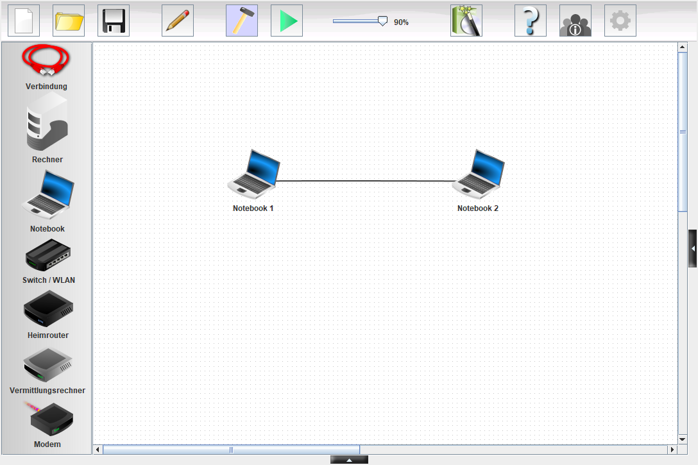

Was brauchen zwei Computer?
Lena will Tom eine Nachricht schicken – direkt von Computer zu Computer, ohne Internet. Stell ein, was du für nötig hältst, und schick die Nachricht los.
Zwei Dinge sind nötig
Eine Verbindung
Die Computer brauchen einen Weg für ihre Daten – zum Beispiel ein Kabel. Verbundene Computer bilden ein .
Eine eigene Adresse
Jeder Computer hat eine . Sie ist wie die Anschrift auf einem Brief: Nur so findet eine Nachricht ihr Ziel.
MERKE
- Eine IP-Adresse besteht aus vier Zahlen mit Punkten, zum Beispiel 192.168.0.10.
- In unserem Netz beginnen alle Adressen mit 192.168.0 – nur die letzte Zahl ist bei jedem Gerät anders.
- Zwei Geräte dürfen nie dieselbe Adresse haben.
Das Programm Filius
In baust du Netzwerke am Bildschirm – ohne echte Kabel. So sieht das Fenster aus. Tippe auf die Punkte.

Bild: Lernsoftware Filius, eigene Aufnahme
Tippe auf einen Punkt im Bild.
0 von 6 entdeckt
Welcher Knopf macht was?
MERKE
- (Hammer): bauen, verbinden, Adressen eintragen, speichern.
- (grüner Pfeil): ausprobieren. Bauen und Speichern gehen hier nicht.
Dein erstes Netzwerk
Bist du da? – Der Ping
Ein Kabel allein beweist noch nichts. Ob zwei Computer sich wirklich erreichen, prüfst du mit dem Befehl . Dein Computer ruft: „Bist du da?“ – und der andere antwortet.
Du tippst den Befehl in die . Dahinter steht die Adresse des Computers, den du erreichen willst:
So liest du die Antwort
Ein ist ein kleines Stück Daten. Ping schickt vier davon los. Kommt keine Antwort, steht dort Timeout! – und am Ende „100% Paketverlust“.
Während der Ping läuft, leuchtet das Kabel im großen Fenster grün auf: Dort fließen gerade Daten.
Hier ist etwas kaputt. Du suchst den Fehler selbst – mit dem, was du heute gelernt hast.
Erkläre in eigenen Worten. Die KI gibt dir einen kurzen Hinweis – nicht die Lösung.
Das nimmst du mit
In welchem Modus machst du das?
Wortspeicher
Alle Fachbegriffe dieser Einheit auf einen Blick.
Wie geht es weiter?
Zwei Computer sind verbunden. Aber was ist, wenn ein dritter dazukommt? Ein Notebook hat nur einen Anschluss. In der nächsten Einheit lernst du den Switch kennen.